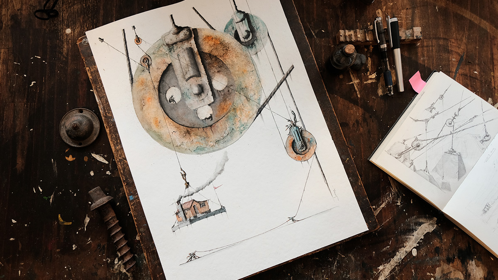

Diario
Clockwork Heart
La precisión se encuentra con la pasión.
Publicado

Debajo de la carne hay un mecanismo. No es una metáfora: es un dibujo que abre el pecho y encuentra engranajes donde todos esperaban un pulso.
Despoja a la forma de su carne para revelar el alma mecánica que late debajo — un estudio sobre aquello que nos impulsa: no sangre y músculo, sino el tic-tac implacable de un propósito forjado en latón y acero.
La curva orgánica de un corazón se reinterpreta como un complejo ensamblaje de engranajes y resortes. El detallado entramado de los dientes entrelazados sugiere una frágil vulnerabilidad en el seno de la fortaleza.
- Latón antiguo y cobre: matices metálicos cálidos que evocan la era industrial victoriana.
- Azul medianoche: un elemento profundo y frío que hace cantar al metal.
- Grafito: líneas nítidas y definitorias que otorgan estructura al mecanismo.
Acuarela y tinta